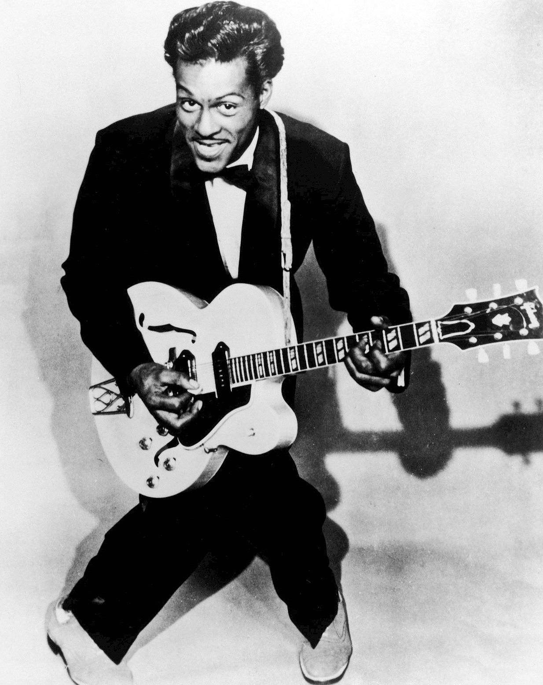

I love to play guitar, with that pasion I love many different genres of music. Here is a list of my favorite genres of music and why!
Jazz
It is an "American made" music and has had greater impact on our culture than many are aware.
It is a very complex music featuring syncopated beats, polyphonic melodies, and collective improvisation.
Unfortunately, it is not widely popular anymore with much of its attention coming from our music education system.
Blues
Like many forms of modern music a springoff of Jazz, based on the 16 bar blues form.
Provides a way of telling somber stories. Really allowed standalone musicians to express themselves.
The Precursor to Rock 'n' Roll, highlighted by musicians like Chuck Berry and Muddy Waters.
Rock 'n' Roll
Derived from Blues and Jazz, simply amplified and simplified to meet a more standard audience.
Made the electric guitar and 5 person band format popular, which is still used in modern music today.

I thought I would include this clip from the movie "Back to the Future". In this clip the song "Johnny B. Goode"
is played. This song is originally performed by Chuck Berry who is pictured above. This song bridged the styles of Blues and Rock 'n' Roll and it is actually the reason I decided to start playing guitar!
As seen in the graph below, these styles have decreased in popularity over the years. My hope is for everyone to at least give these styles a chance so they dont die off. Everyone is entitled to their own opinions on music, but I feel the musical complexity and expertise in past music genres is not found in todays pop music.